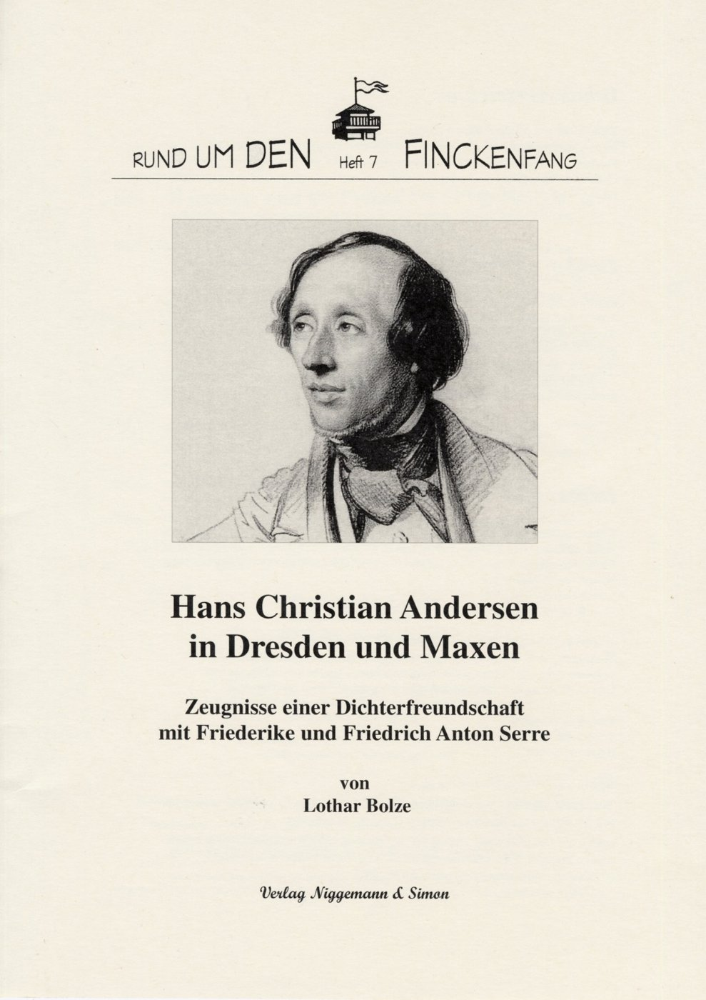

Rund um den Finckenfang · Heft 7
Hans Christian Andersen in Dresden und Maxen. Zeugnisse einer Dichterfreundschaft mit Friederike und Friedrich Anton Serre
Lothar Bolze
1. Auflage · Maxen 2005 · 44 Seiten · 39 Abbildungen
ISBN 3-9808477-7-2
9,80 €
Zum Inhalt
Es war eine ganz besondere Freundschaft, die seit 1844 zwischen ihm und seinen Freunden Friederike und Friedrich Anton Serre in Maxen bestand. Der dänische Märchendichter liebte die beiden großzügigen Menschen, schätzte ihre außerordentliche Gastfreundschaft, und er wusste, wie viel Gutes sie im Stillen taten. Auf seinen dreißig Reisen kam er zweiunddreißig Mal nach Dresden und dreizehn Mal in sein liebes sächsisches Heim nach Maxen!